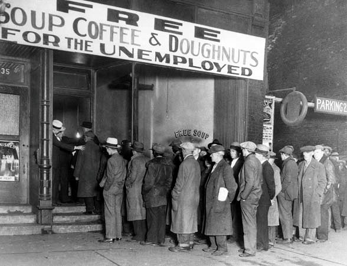
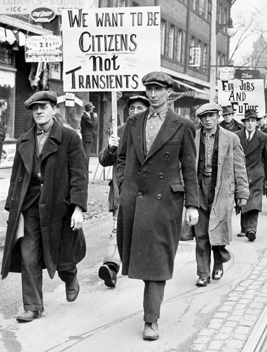
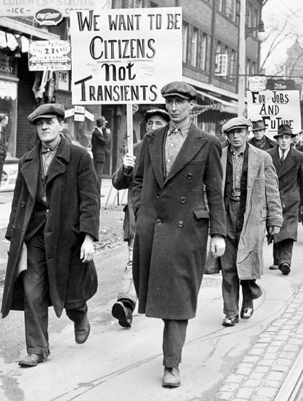

What was the Roaring 20s and the Great Depressing?
The Roaring Twenties in Canada was a period in which there was great economic growth and an influx of immigration, life was good and the people were eager to enjoy life after experiencing worst war seen yet. It was a time of prosperity and optimism, with many enjoying the benefits of new technologies, such as automobiles and radios. However amazing, this period came to an abrupt end with the Great Depression in the 1930s, a global economic crisis that had a significant impact on Canada. The country experienced high unemployment and poverty, with many people struggling to make ends meet. The Depression changed the course of Canadian history and had long-lasting effects on the country's economy, culture, and society.

Was the 1920s a period of progress or decline?
As stated before, the 1920s in Canada was a period of significant progress rather than decline. The country experienced massive economic growth due to the expansion of industries such as railways and automotive, as well as the mining sector. There was also a cultural renaissance characterized by new art forms, especially jazz music, and an increase in tourism. While the Great Depression in the 1930s brought significant challenges, the 1920s in Canada still represented a time of optimism and progress, showcasing the country's potential for continued economic and social development.
Why was the 1930s a dark time in history?
The 1930s in Canada was a period defined by significant hardship due to the impact of the Great Depression, a global economic crisis that caused high levels of unemployment, widespread poverty, and significant social unrest, leaving millions of Canadians struggling to make it through. It was a time of tremendous struggle due to intense economic difficulties and social unrest, making it one of the toughest periods in Canadian history. In the early 1930s, the depression was mostly caused by a collapse in stock prices in the United States, causing a domino effect throughout the global economy that had significant unfortunate consequences on countries like Canada. Despite these challenges, Canadians were able to survive and overcome the impacts of the depression and emerge stronger in the future decades, leading to a more prosperous and stable economy.
 
